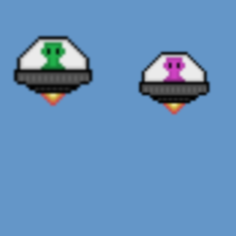
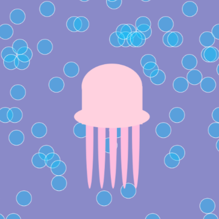
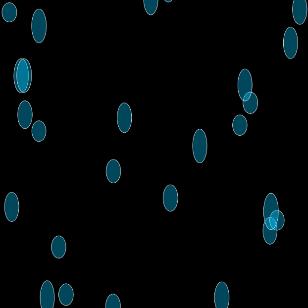
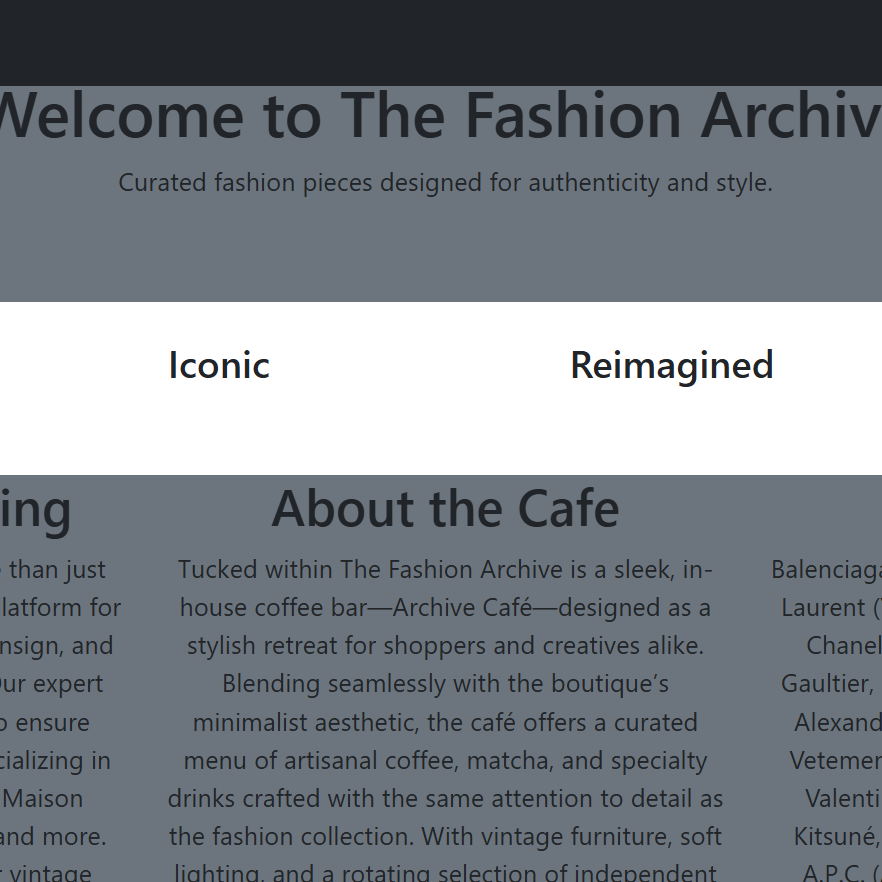

Work
Projects I've built.

Creature Lab
Simulates an autonomous alien creature navigating its environment. It solves the problem of modeling lifelike behavior through rules-based movement in p5.js.
The main challenge was creating natural-looking movement without physics libraries. I relied on velocity vectors and boundary detection, debugging edge cases where the creature would clip off-screen.

Noise Lab
Renders a jellyfish with fluid, organic tentacle motion. It addresses the challenge of simulating non-repeating natural movement using Perlin noise algorithms.
Understanding how to increment the noise offset over time to produce smooth, non-looping motion was the key insight. I adjusted the amplitude and frequency values extensively to create a believable aquatic feel.

Bubble Lab
Generates a field of transparent bubbles that drift upward with random speeds and sizes. This models realistic particle physics within a 2D canvas environment.
Managing an array of bubble objects and recycling them off-screen without memory buildup required careful use of splice and index tracking. This was a foundational lesson in efficient animation loops.

Walker Lab
Visualizes a random walk algorithm. An ellipse moves randomly across the canvas, painting its path and demonstrating probabilistic path generation.
The challenge was ensuring the walker felt truly random rather than biased. I experimented with variable probability directional weights and used background transparency to layer the trail effect without clearing the canvas each frame.

For Loop Lab
Demonstrates dynamic iteration. Ellipses multiply and reposition in real-time based on the mouse's X coordinate, making the loop logic visually interactive.
Mapping mouseX to a loop counter required clamping the value to avoid rendering thousands of shapes. This project taught me the importance of input validation, even in small creative programs.

Fashion Archive
A fully responsive e-commerce-style website for a high-end fashion small business. It solves the need for a polished, brand-consistent online presence without a CMS.
Translating a brand's aesthetic into a consistent design system was the central design challenge. I used Bootstrap's grid to ensure full responsiveness across breakpoints.
Image Compression Lab
A Java application that reduces image file sizes by analyzing and encoding pixel data. It addresses the practical problem of storage optimization without relying on external libraries.
Reading and writing raw pixel arrays in Java required deep familiarity with BufferedImage and bit manipulation. Debugging color channel corruption during encoding was the most significant obstacle, resolved through systematic unit testing of each channel independently.
The Python Library Project
A command-line library management system written in Python. It tackles the real-world issue of cataloging, searching, and checking out books through a structured CLI interface.
Designing a menu-driven interface that remained intuitive while supporting multiple operations required careful UX thinking, even in a text-only environment. Handling invalid input gracefully without crashing the loop was a recurring debugging focus.
Software Design Final Project
An application for sprint analysis that receives run velocity information and generates reports. It fulfills the need for a fast and human-readable solution in software engineering.
Separating data input, processing, and display into different parts formed the architectural problem that needed to be solved. Using software engineering concepts in a console-based application helped emphasize the importance of modularity in code, regardless of how large the program is.